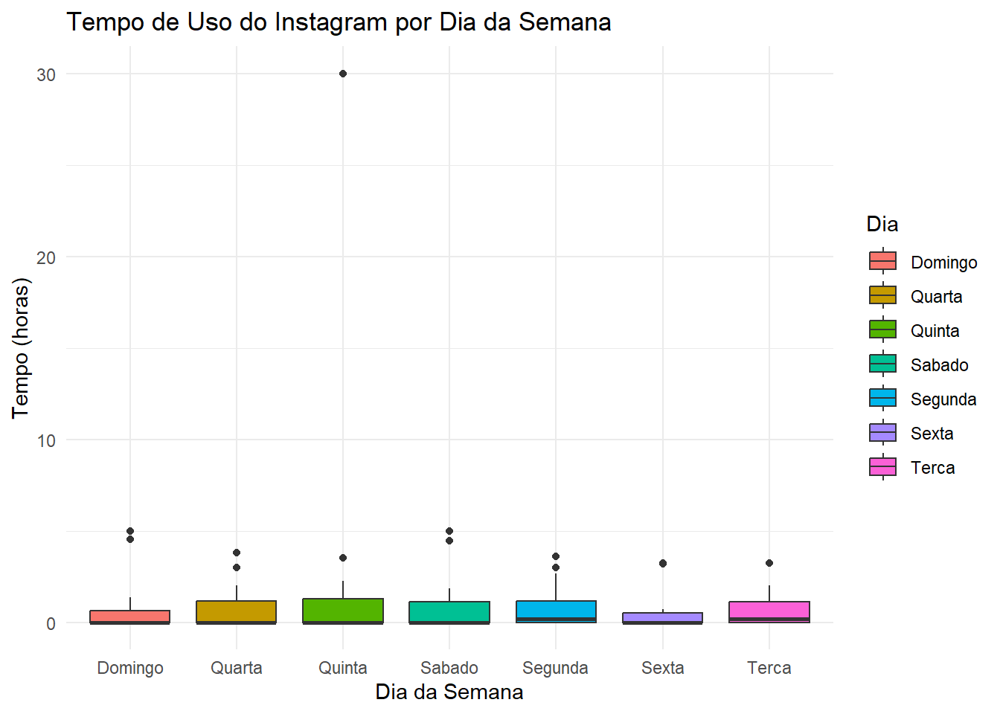
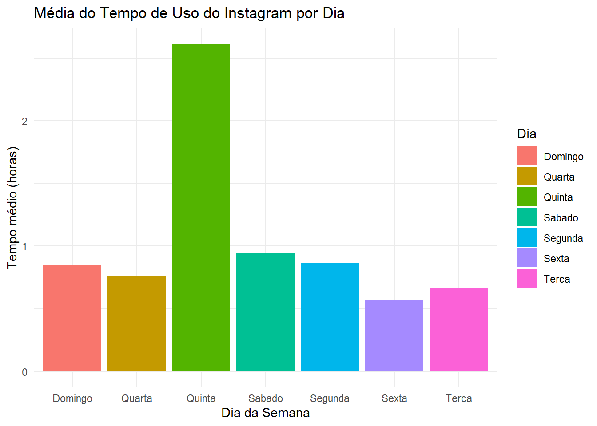

Code
library(lmtest)
library(ggplot2)
library(dplyr)
library(tidyr)
library(readr)
library(stringr)Modelagem Estatística
library(lmtest)
library(ggplot2)
library(dplyr)
library(tidyr)
library(readr)
library(stringr)airquality_data <- read_csv("data/airquality.csv")
>> Rows: 153 Columns: 7
>> ── Column specification ────────────────────────────────────────────────────────
>> Delimiter: ","
>> dbl (7): rownames, Ozone, Solar.R, Wind, Temp, Month, Day
>>
>> ℹ Use `spec()` to retrieve the full column specification for this data.
>> ℹ Specify the column types or set `show_col_types = FALSE` to quiet this message.
metanalise_data <- read_csv("data/metanalise.csv")
>> New names:
>> Rows: 100 Columns: 5
>> ── Column specification
>> ──────────────────────────────────────────────────────── Delimiter: "," chr
>> (1): cluster dbl (3): ...1, yi, vi lgl (1): randomized
>> ℹ Use `spec()` to retrieve the full column specification for this data. ℹ
>> Specify the column types or set `show_col_types = FALSE` to quiet this message.
>> • `` -> `...1`
sleep_data <- read_csv("data/sleep.csv")
>> New names:
>> Rows: 180 Columns: 4
>> ── Column specification
>> ──────────────────────────────────────────────────────── Delimiter: "," dbl
>> (4): ...1, Reaction, Days, Subject
>> ℹ Use `spec()` to retrieve the full column specification for this data. ℹ
>> Specify the column types or set `show_col_types = FALSE` to quiet this message.
>> • `` -> `...1`import pandas as pd
metanalise = pd.read_csv("data/metanalise.csv")
# Apaga a coluna de índices
metanalise = metanalise.drop("Unnamed: 0", axis=1)
metanalise.info()
>> <class 'pandas.core.frame.DataFrame'>
>> RangeIndex: 100 entries, 0 to 99
>> Data columns (total 4 columns):
>> # Column Non-Null Count Dtype
>> --- ------ -------------- -----
>> 0 yi 100 non-null float64
>> 1 vi 100 non-null float64
>> 2 cluster 100 non-null object
>> 3 randomized 100 non-null bool
>> dtypes: bool(1), float64(2), object(1)
>> memory usage: 2.6+ KBinstagram_data <- read_csv("data/instagram.csv")
>> Rows: 15 Columns: 18
>> ── Column specification ────────────────────────────────────────────────────────
>> Delimiter: ","
>> chr (18): Segunda, Terca, Quarta, Quinta, Sexta, Sabado, Domingo, idade, gen...
>>
>> ℹ Use `spec()` to retrieve the full column specification for this data.
>> ℹ Specify the column types or set `show_col_types = FALSE` to quiet this message.
convert_to_hours <- function(time_str) {
time_str <- tolower(time_str) # Converter para minúsculas
horas <- as.numeric(str_extract(time_str, "\\d+(?= h)")) # Pegar as horas
minutos <- as.numeric(str_extract(time_str, "\\d+(?= min)")) # Pegar os minutos
# Substituir NA por 0 onde necessário
horas[is.na(horas)] <- 0
minutos[is.na(minutos)] <- 0
# Converter para horas
total_horas <- horas + (minutos / 60)
return(total_horas)
}
dias_da_semana <- c("Segunda", "Terca", "Quarta", "Quinta", "Sexta", "Sabado", "Domingo")
instagram_data_2 <- instagram_data %>%
mutate(across(all_of(dias_da_semana), convert_to_hours))glimpse(instagram_data_2)
>> Rows: 15
>> Columns: 18
>> $ Segunda <dbl> 0.9333333, 1.3666667, 0.0000000, 0.0000000, 0.000000…
>> $ Terca <dbl> 1.2666667, 1.4500000, 0.0000000, 0.0000000, 0.000000…
>> $ Quarta <dbl> 0.7833333, 0.0000000, 0.0000000, 0.0000000, 0.000000…
>> $ Quinta <dbl> 1.3666667, 1.2166667, 0.0000000, 0.0000000, 0.000000…
>> $ Sexta <dbl> 0.3666667, 0.6333333, 0.0000000, 0.0000000, 0.000000…
>> $ Sabado <dbl> 0.91666667, 1.83333333, 0.00000000, 0.00000000, 0.00…
>> $ Domingo <dbl> 0.63333333, 0.53333333, 0.00000000, 0.00000000, 0.00…
>> $ idade <chr> "24", "23", "22", "21", "22", "23", "24", "25", "22"…
>> $ genero <chr> "Masculino", "Hétero", "Masculino", "M", "Masculino"…
>> $ trabalha <chr> "Sim", "Sim", "Sim", "Sim", "Não", "Não", "Sim", "Nã…
>> $ trabalhaInstagram <chr> "Não", "Não", "Não", "Não", "Não", "Não", "Não", "Nã…
>> $ videosLongos <chr> "Sim", "Sim", "Sim", "Sim", "Sim", "Sim", "Não", "Si…
>> $ moraSo <chr> "Não", "Sim", "Não", "Não", "Não", "Não", "Não", "Nã…
>> $ Semestre <chr> "5+", "5+", "5+", "5+", "5+", "5+", "5+", "5+", "5+"…
>> $ streamingDiario <chr> "Sim", "Não", "Não", "Não", "Sim", "Sim", "Não", "Nã…
>> $ acesso <chr> "4g e outros diferentes meios de wi-fi.", "4g e outr…
>> $ translado <chr> "40 minutos", "40 min", "1h 40min", "2 horas", "1 ho…
>> $ transporte <chr> "Majoritariamente privado", "Majoritariamente privad…
head(instagram_data_2)
>> # A tibble: 6 × 18
>> Segunda Terca Quarta Quinta Sexta Sabado Domingo idade genero trabalha
>> <dbl> <dbl> <dbl> <dbl> <dbl> <dbl> <dbl> <chr> <chr> <chr>
>> 1 0.933 1.27 0.783 1.37 0.367 0.917 0.633 24 Masculino Sim
>> 2 1.37 1.45 0 1.22 0.633 1.83 0.533 23 Hétero Sim
>> 3 0 0 0 0 0 0 0 22 Masculino Sim
>> 4 0 0 0 0 0 0 0 21 M Sim
>> 5 0 0 0 0 0 0 0 22 Masculino Não
>> 6 3.62 2 1.5 3.52 3.18 4.47 4.97 23 masculino Não
>> # ℹ 8 more variables: trabalhaInstagram <chr>, videosLongos <chr>,
>> # moraSo <chr>, Semestre <chr>, streamingDiario <chr>, acesso <chr>,
>> # translado <chr>, transporte <chr>instagram_long <- instagram_data_2 %>%
pivot_longer(cols = c(Segunda:Domingo), names_to = "Dia", values_to = "Tempo")
# Criar histograma separado por dia
ggplot(instagram_long, aes(x = Tempo, fill = Dia)) +
geom_histogram(bins = 10, color = "black", alpha = 0.7) +
facet_wrap(~ Dia) + # Cria um gráfico separado para cada dia
labs(title = "Distribuição do Tempo de Uso do Instagram por Dia",
x = "Tempo (horas)", y = "Frequência") +
theme_minimal()
# Transformar os dados para o formato longo
instagram_long <- tidyr::pivot_longer(instagram_data_2, cols = all_of(dias_da_semana),
names_to = "Dia", values_to = "Tempo")
# Criar um boxplot para ver a distribuição do uso ao longo da semana
ggplot(instagram_long, aes(x = Dia, y = Tempo, fill = Dia)) +
geom_boxplot() +
labs(title = "Tempo de Uso do Instagram por Dia da Semana",
x = "Dia da Semana", y = "Tempo (horas)") +
theme_minimal()
instagram_long %>%
group_by(Dia) %>%
summarise(Media_Tempo = mean(Tempo, na.rm = TRUE)) %>%
ggplot(aes(x = Dia, y = Media_Tempo, fill = Dia)) +
geom_bar(stat = "identity") +
labs(title = "Média do Tempo de Uso do Instagram por Dia",
x = "Dia da Semana", y = "Tempo médio (horas)") +
theme_minimal()